ЦЕЛЬ
Выяснить, какое значение имела военная авиация для Победы в Великой Отечественной войне и почему сильные самолёты нужны стране сегодня.
Исследовательский проект · Люберцы · 2026
От Ил-2 до Су-57 — как авиация приближала и бережёт Победу
БРИФИНГ МИССИИ
Выяснить, какое значение имела военная авиация для Победы в Великой Отечественной войне и почему сильные самолёты нужны стране сегодня.
Без господства в небе не было бы Победы на земле. Самолёты были одним из главных инструментов Победы.
Инженеры и герои во все времена превозмогали себя и совершали невозможное — ради славы народа, безопасности страны и победы над неприятелем.
ДНЕВНИК ПОЛЁТОВ
Каждый вылет — новое задание и новая медаль. Выполняй — заполняй лендинг — становись Лётчиком-асом!
Генеральный штаб Красной Армии, 1941 г. — район боевых действий, где летали наши лётчики
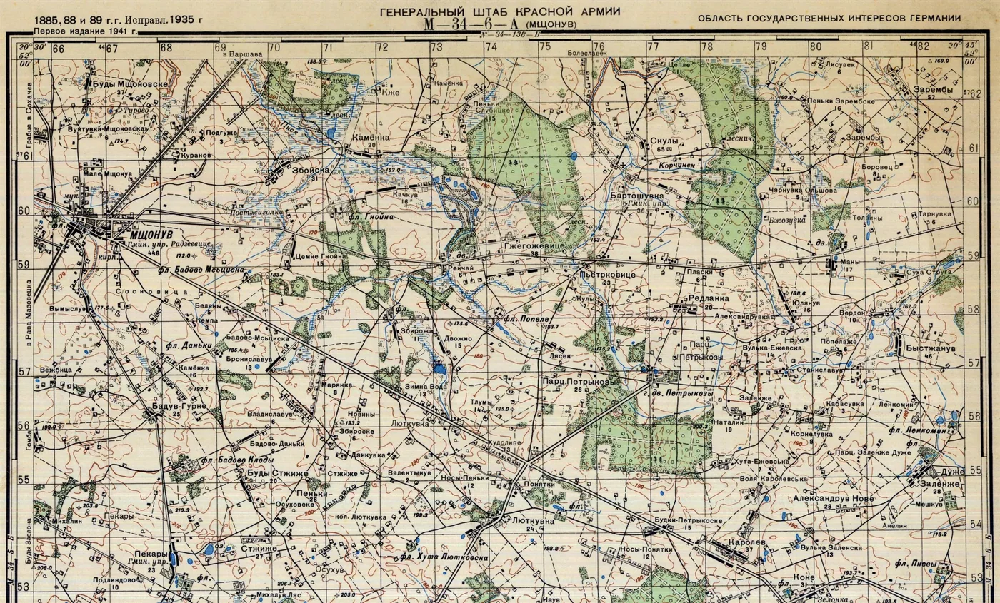
ВЫЛЕТ № 01 · РАЗВЕДКА НЕБА
Макар нашёл фото и описания трёх легендарных самолётов
ВЫЛЕТ № 02 · ЛЕТАЮЩИЙ ТАНК
Макар посмотрел видео про Ил-2 и изучил историю авиации
Бронированный штурмовик — самый массовый боевой самолёт в истории. Фашисты звали его «чёрная смерть».
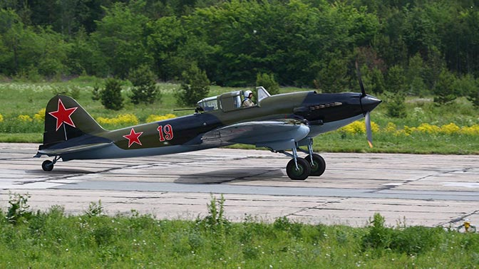
Тихий учебный У-2 стал ночным бомбардировщиком. Женский полк немцы прозвали «ночными ведьмами» — они панически боялись их тихого «шороха» в небе.
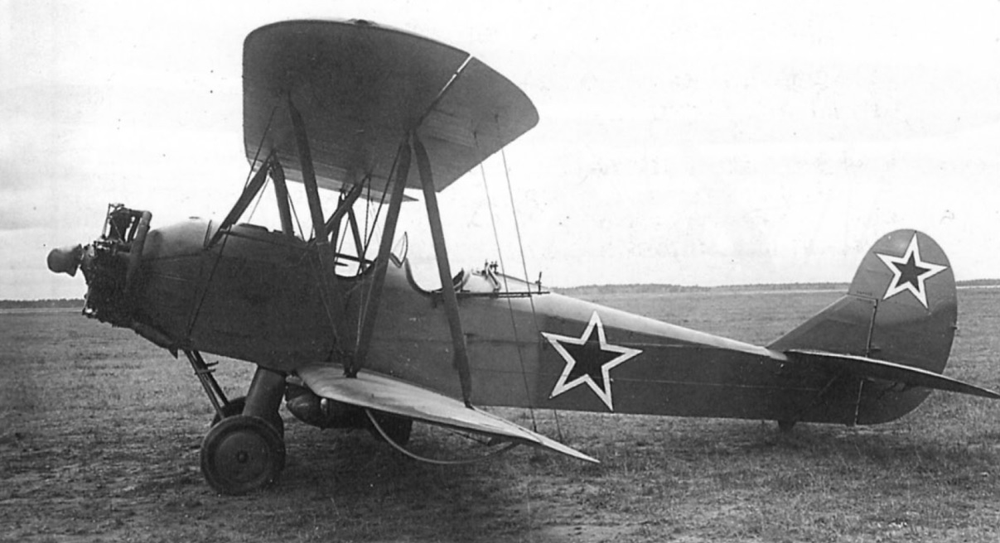
Лёгкий юркий истребитель. На Як-3 воевал ас № 1 Александр Покрышкин. Немцам приказывали не вступать в бой с «яками» без крайней нужды.
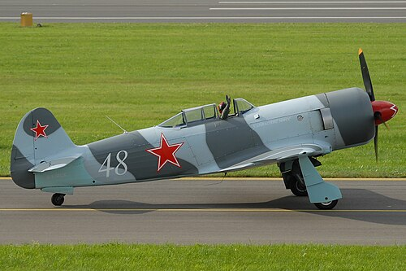
Скоростные бомбардировщики прокладывали дорогу танкам и пехоте, разбомбив укрепления врага до самого Берлина.
SLOT · assets/img/chronicle/pe2.jpgСамый большой сверхзвуковой бомбардировщик в мире. Его полёт — это гарантия, что войну к нам не принесут.
SLOT · assets/img/chronicle/tu160.jpgСамый массовый сверхзвуковой истребитель в истории. Летел со скоростью 2 300 км/ч — быстрее звука. Конструировали его Микоян и Гуревич, а летали на нём больше сорока стран, и летают до сих пор.
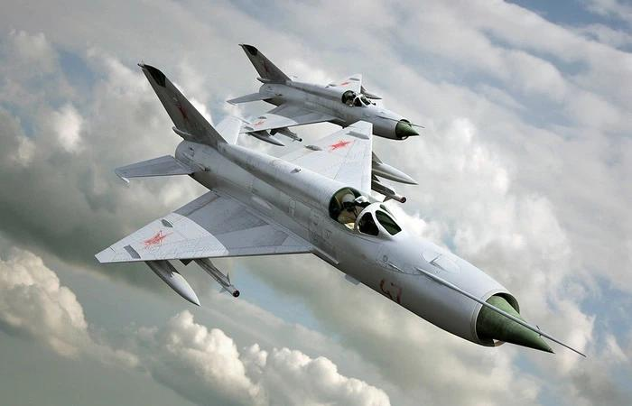
🎙 Фото Макара · нажми и послушай рассказНезаметный для радаров истребитель. Наследник «летающих танков»: та же задача — охранять небо Родины.
SLOT · assets/img/chronicle/su57.jpgВЫЛЕТ № 03 · БУМАЖНЫЙ АНГАР
Собери эскадрилью дома: три модели из листа А4 — истребитель, бомбардировщик, планер
Согни лист вдоль пополам и разогни — получилась ось.
Загни верхние углы к оси.
Ещё раз загни к оси — нос стал острым.
Согни модель пополам по оси.
Отогни крыло вниз чуть выше центра корпуса.
Отогни второе крыло точно так же.
Кончики крыльев подними вверх — стабилизаторы.
Запускай резким движением прямо вперёд!
Согни лист вдоль пополам и разогни.
Загни верхние углы к центру.
Загни острый нос вниз, до середины листа.
Снова загни верхние углы — оставь маленький уголок торчать.
Зафиксируй нос уголком.
Сложи пополам по оси, отогни широкие крылья.
Проверь: нос тупой и тяжёлый — так и надо.
Запускай плавно, сверху вниз — он планирует грузно, как настоящий.
Возьми половину листа А4 (разрежь по длинной стороне).
Согни вдоль пополам и разогни.
Загни углы к оси всего один раз.
Сложи пополам по оси.
Отогни очень длинные узкие крылья.
Слегка прогни заднюю кромку крыльев вверх.
Отпусти из руки спокойно, без броска.
Он летит медленно и тихо — как По-2 ночью!
Лётные испытания — замеры дальности
Курсант Макар сложил эскадрилью и снял на видео запуск самолётиков с замерами дальности. Штаб зачёл эти данные в вылет №3.
ВЫЛЕТ № 04 · НОЧНЫЕ ВЕДЬМЫ
Портреты Покрышкина, Маресьева, Гастелло, «Ночных ведьм» и Ильи Сизова найдены и присланы Макаром из своего архива. Штаб ждёт голосовой доклад курсанта: чем он знаменит и чему нас научил
ВЫЛЕТ № 05 · КИНОАРХИВИСТ
Макар смотрит фильмы о войне и заполняет киноархив проекта
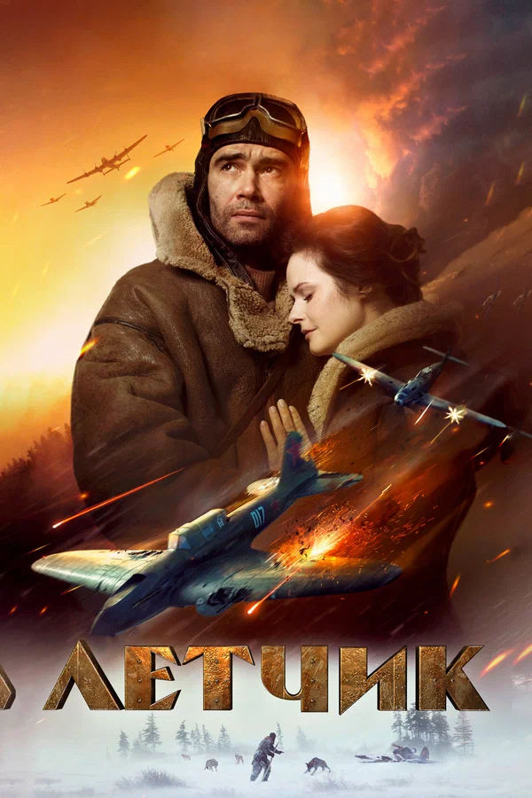
2021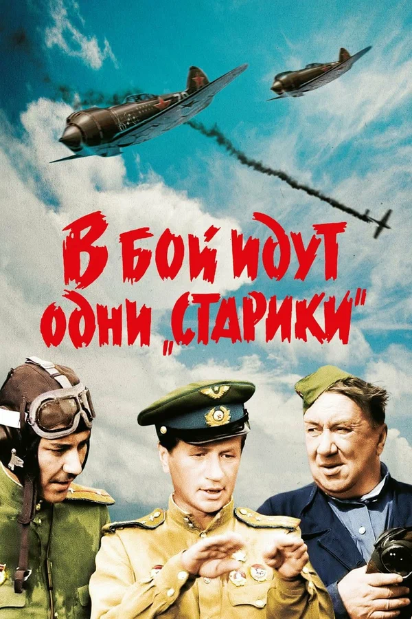
1974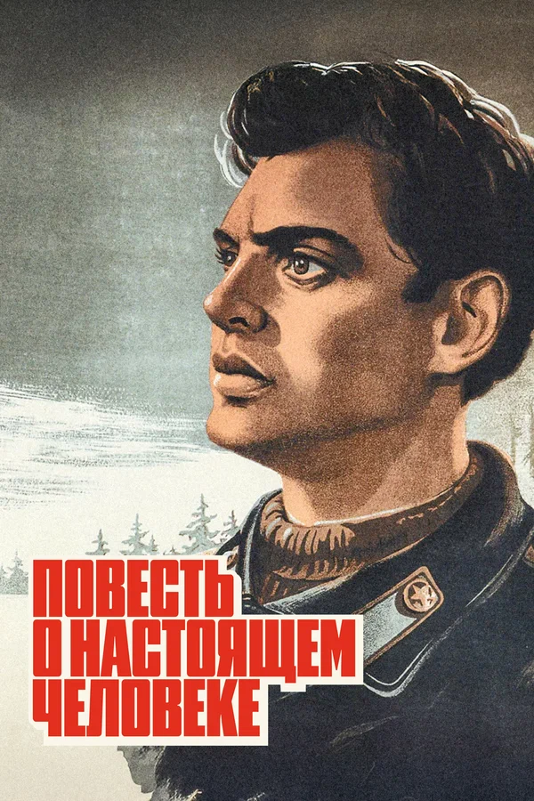
1948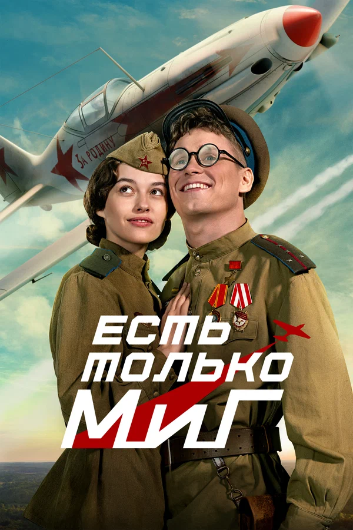
2022Нажми на фильм — и Макар расскажет, что он узнал и что его удивило. Нажми ещё раз, чтобы остановить.
ВЫЛЕТ № 06 · ИНЖЕНЕР
Жми на точки прицела — изучи каждую часть самолёта Ил-2
ВЫЛЕТ № 07 · ЗНАТОК СНАРЯЖЕНИЯ
Наведи или коснись предмета — что с собой берёт пилот Ил-2
Колено летчика: на планшете крепится карта маршрута. Правой рукой штурвал — левой ведёт курс по карте.
Навигатор без GPS: маршрут, цель, обратный путь. Карандаш химический — пишет вверх ногами и в дождь.
Личное оружие пилота: защита на случай вынужденной посадки на территории врага.
Неприкосновенный запас: концентраты, шоколад, таблетки против укачивания. Хватает на несколько дней автономного выживания.
На высоте минус 40: шлем греет, очки спасают от ледяного ветра открытой кабины По-2.
Последний друг лётчика. Советские парашюты системы Котельникова спасли тысячи пилотов.
ВЫЛЕТ № 08 · ГОЛОС ЭСКАДРИЛЬИ
Стихотворение «Военные лётчики» читает сам Макар — по памяти, без бумажки. А песню «Як Истребитель» они поют в дуэте: Макар — голосом, дядя Глеб — на гитаре
Летят на серебряных крыльях
Защитники нашей страны.
Здесь скорости сверхзвуковые,
Здесь знания очень важны.Стать летчиком очень не просто.
Хоть небо мальчишек зовет.
Важны здесь отвага и смелость,
Лентяй в их отряд не пройдет.
Читает Макар наизусть · вылет № 8 · 22 секунды
Серебро было засчитано за стих наизусть. Золото Макар добрал песней в дуэте с дядей Глебом — она ниже.
Дуэт: Макар поёт два куплета, дядя Глеб играет на гитаре. 35 секунд.
🏅 Медаль «Голос эскадрильи» — золото. Стих наизусть дал серебро, песня с дядей Глебом — золото. Задание выполнено целиком
ВЫЛЕТ № 09 · МУЗЕЙНЫЙ РЕЙД
Макар съездил в музей в Кубинке, где шла реконструкция обороны Москвы, — и принёс в класс живую память о войне
🏅 Задание выполнено полностью — золото. Письменный отчёт Макар принесёт ещё, это будет уже сверх задания.
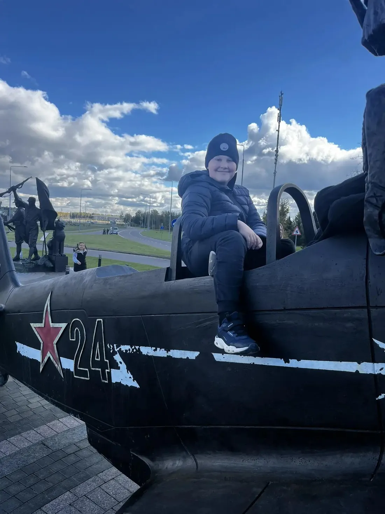
Две части — так он записывал, пока ходил по залам
Часть 1 · Кубинка, храм и реконструкция
Часть 2 · Экспонаты за стеклом
ГДЕ БЫЛ МАКАР
Всё, где Макар побывал и что он посмотрел. Нажми на карточку — лендинг покажет подробности
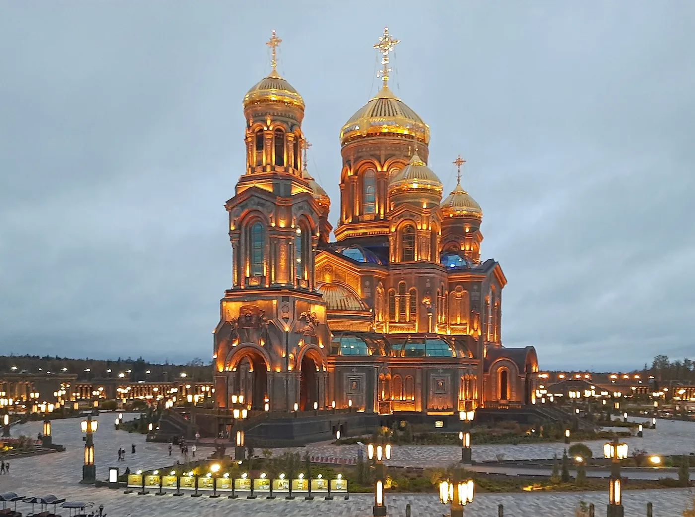
ХРАМ ВООРУЖЁННЫХ СИЛ, КУБИНКА 3 октября 2026 · реконструкция обороны Москвы, экспонаты техники и подлинные архивы МУЗЕЙНЫЙ РЕЙД · ВЫЛЕТ № 9 →ВЫЛЕТ № 11 · МОТОРИСТ
Макар разобрал, как устроены двигатели Ил-2 и Су-57, и записал всё сам — со схемами, цифрами и ответами на вопросы
РОЛИКИ, КОТОРЫЕ МАКАР НАШЁЛ В ИНТЕРНЕТЕ
Он собрал для доклада чужие ролики про двигатели — теперь их можно посмотреть тут же
МАТЕРИАЛЫ ОТ МАКАРА
Макар присылает ролики — колонка растёт. Нажми на видео, чтобы смотреть
Сюда попадают видео, которые Макар присылает для проекта. Следующий ролик появится здесь.
ВЫЛЕТ № 10 · МОСТ ПОКОЛЕНИЙ
Макар сравнил Ил-2 и Су-57 — как авиация изменилась за восемьдесят лет. Вот его доклад и его таблица
ДОКЛАД МАКАРА
Две части: сначала про эпохи, потом разбор параметров по пунктам
ЧАСТЬ 1 · ЭПОХИ
ЧАСТЬ 2 · ПАРАМЕТРЫ
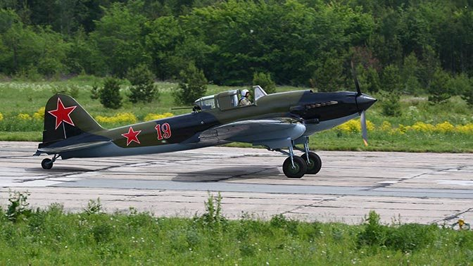
Летающий танк Великой Отечественной
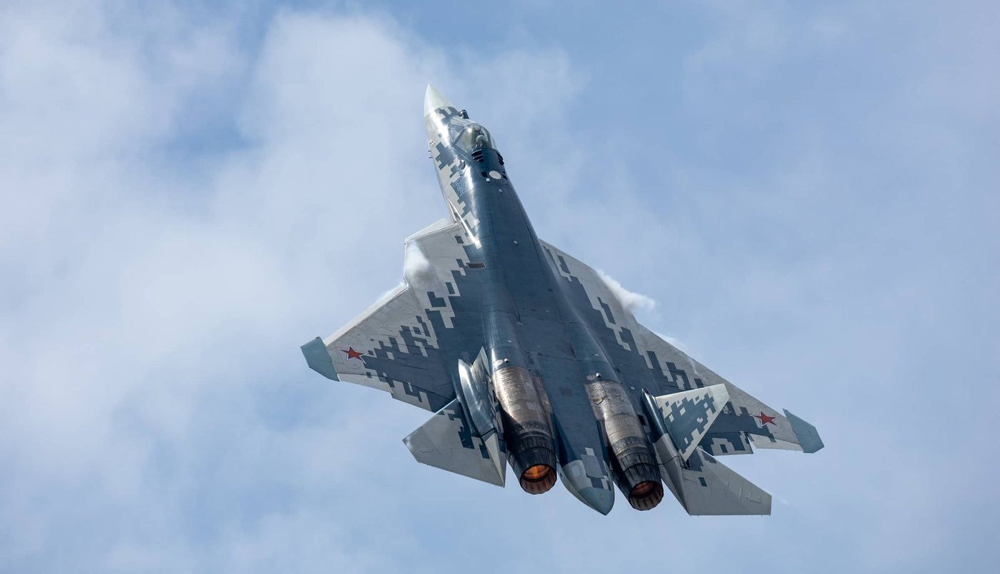
Сверхзвуковой истребитель сегодняшнего дня
Пять различий, которые назвал Макар в своём докладе
Скорость. Ил-2 — 400–414 км/ч, Су-57 — 2000 км/ч. Современный истребитель летит почти в пять раз быстрее
Назначение. Ил-2 — штурмовик, он летел на танки и на пехоту. Су-57 — истребитель, он сбивает самолёты в воздухе
Вооружение. У Ил-2 пушки, пулемёты, бомбы и реактивные снаряды. У Су-57 высокоточные ракеты «Воздух-воздух», «Воздух-поверхность» и пушка 30-мм
Броня. У Ил-2 4–5 мм брони — поэтому его звали летающим танком. У Су-57 брони нет совсем, зато есть ракеты и скорость
Размер и вес. Ил-2 — 4242 кг и 11,6 м, экипаж 1–2 человека. Су-57 — 18 500 кг и 19,7 м, экипаж один
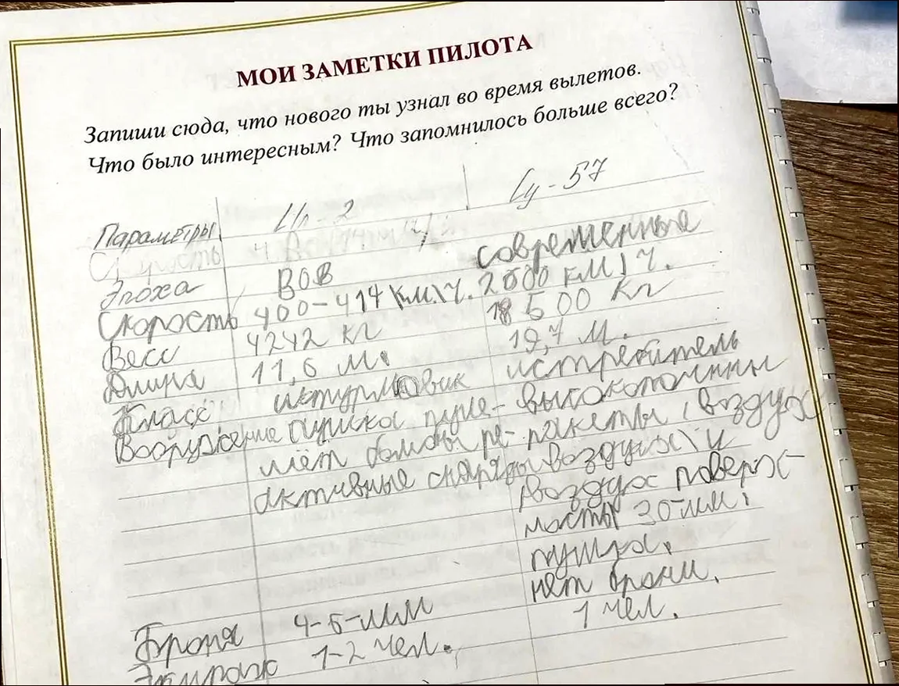
Задание вылета выполнено целиком: сравнение, пять различий с объяснением и наглядная таблица из лётной книжки. Медаль «Мост поколений» — золото
ПРОВЕРЬ СЕБЯ
Сто вопросов об авиации Великой Отечественной. За каждый правильный ответ — боеприпасы, прогресс сохраняется. Можно пройти заново или повторить только ошибки
А ТЫ КАКОЙ ПИЛОТ?
Шесть быстрых вопросов — и ты узнаешь свою машину. Для гостей и комиссии
ВЫЛЕТ № 13 · МОДЕЛИСТ
Наградной конструктор Су-57 уже собран. Осталось поставить модель в экспозицию — сфотографировать её на фоне нашего сайта
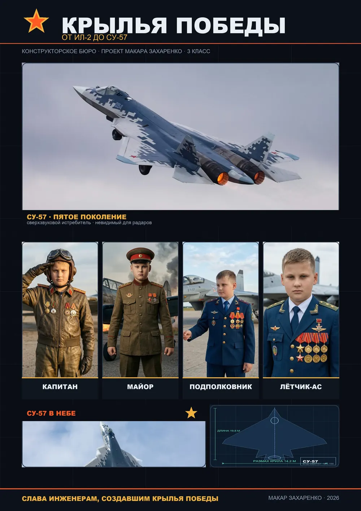
ГОЛОС МАКАРА О СБОРКЕ · 30 СЕКУНД
Самое сложное — корпус и кабина: с кабиной они мучились очень долго, пока не разобрались, как её поставить
УРОВНИ МЕДАЛИ
🏅 Задание выполнено на серебро. До золота — одно фото: поставь модель рядом с нашим сайтом (на экране или рядом с распечатанной страницей)
ИНТЕРАКТИВ ДЛЯ ВСЕХ
Немецкий истребитель Messerschmitt. Наводи прицел и бей — звучат очереди и остаются пробоины. Сможет любой посетитель!
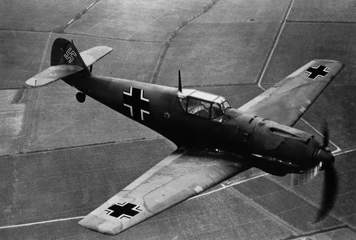
Отличная стрельба, лётчик «Сокол» — враг обезврежен.
ЭСКАДРИЛЬЯ «РАСТИ СЕМЬЯ»
Каждые 2 медали = следующее звание. Выполняй вылеты, заполняй лендинг — расти до «Лётчика-аса»!
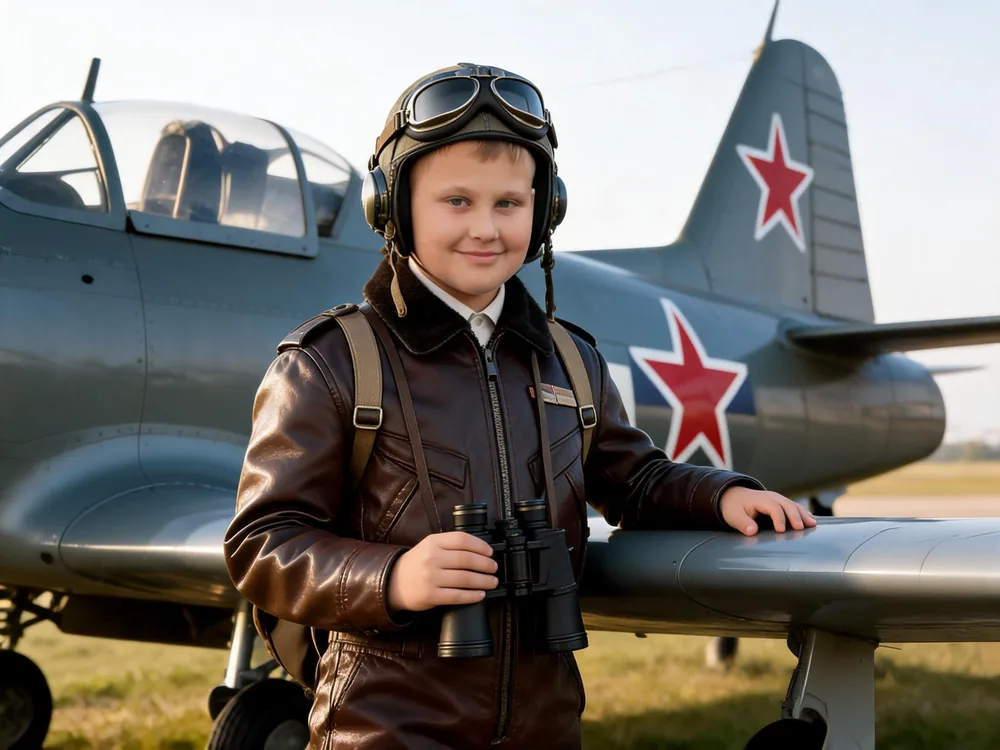
✓ ПОЛУЧЕНО Курсант Старт кампании. Нужна 1 медаль — любая.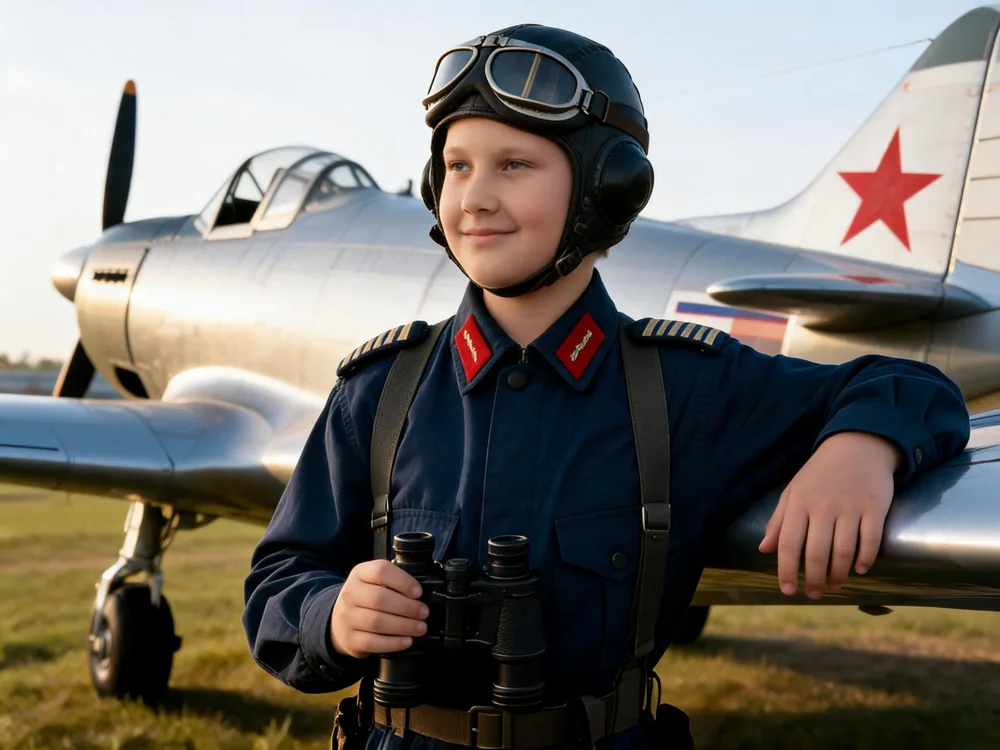
✓ ПОЛУЧЕНО Младший лейтенант Нужно 2 медали: «Разведчик неба», «Летающий танк».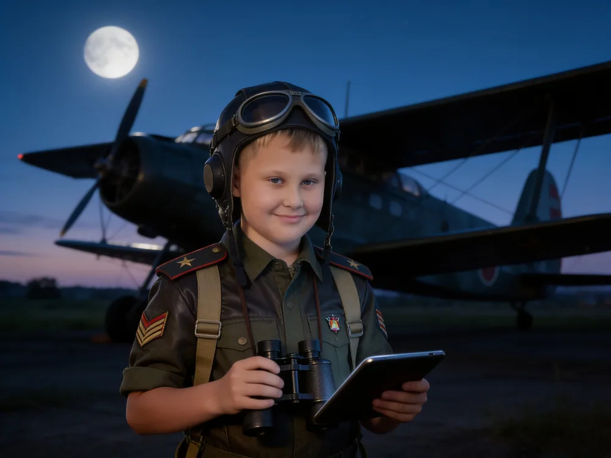
ЗАКРЫТО Лейтенант Нужно 4 медали: «Бумажный ас», «Ночной разведчик».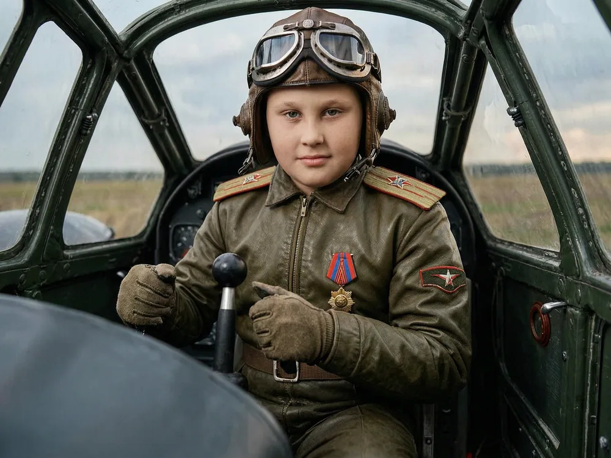
ЗАКРЫТО Старший лейтенант Нужно 6 медалей: «Киноархивист», «Инженер».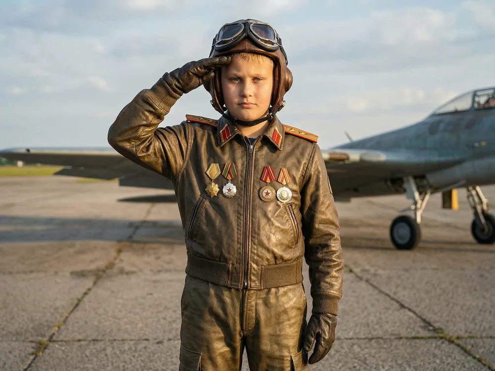
ЗАКРЫТО Капитан Нужно 8 медалей: «Знаток снаряжения», «Голос эскадрильи».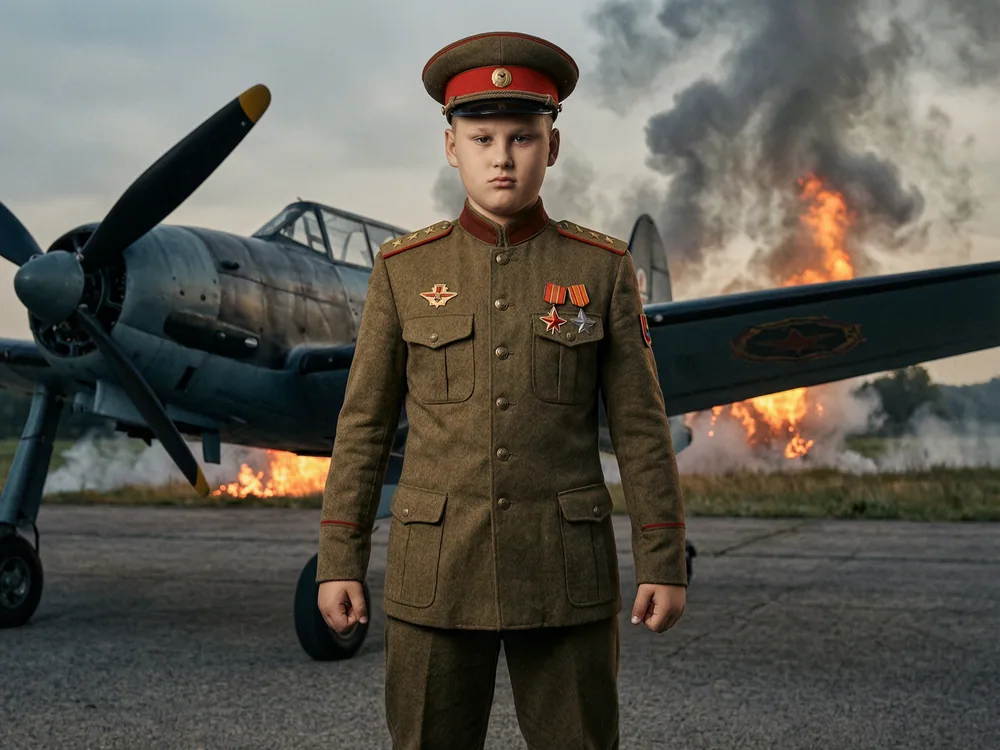
ЗАКРЫТО Майор Нужно 10 медалей: «Музейный рейд», «Мост поколений».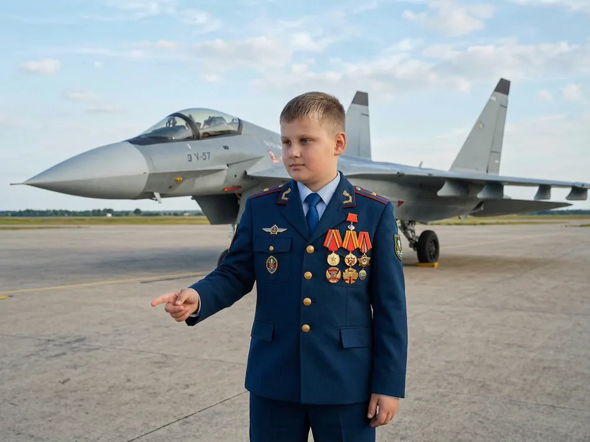
ЗАКРЫТО Подполковник Нужно 12 медалей: «Моторист», «Штурман».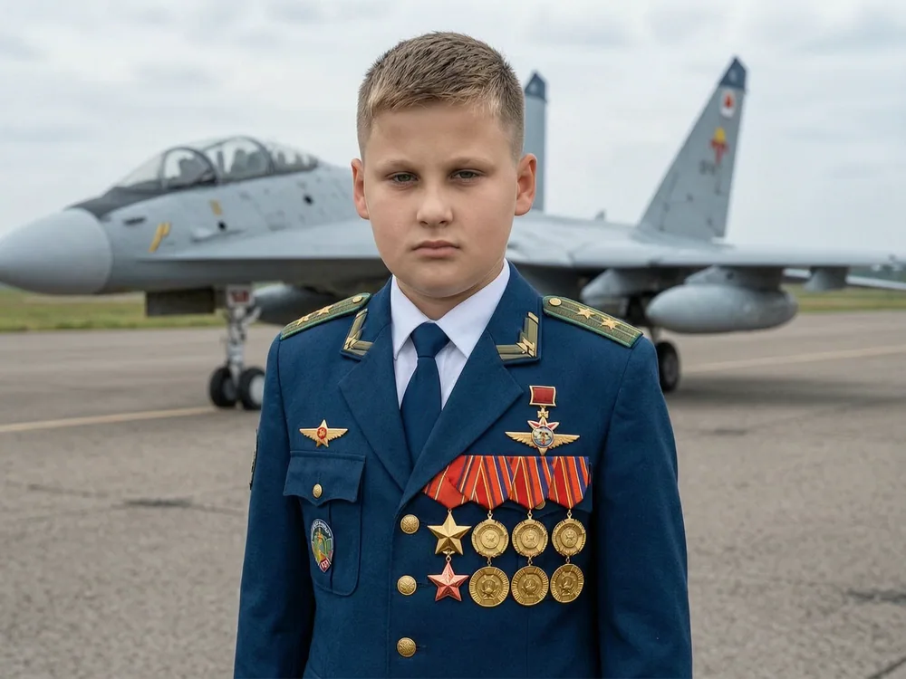
ЗАКРЫТО Лётчик-ас ФИНАЛ: 14 медалей, 90% золотых. «Моделист», «Оратор», «Золотая звезда».ЛЕТОПИСЬ ЭСКАДРИЛЬИ «РАСТИ СЕМЬЯ»
ЖУРНАЛ РАДИОСВЯЗИ
Голосовые переговоры штаба и эскадрильи «Расти семья» — задания, отчёты и подтверждения
Установка связи с курсантом
Позывной курсанта: «Бессмертный»
Приказ о присяге курсанта
Текст присяги курсанта
Отговорки Макара
Первая попытка присяги
Присяга не принята — переделай
Присяга принята — Макар клянётся!
Видео присяги Макара
Присяга принята — добро пожаловать в эскадрилью!
Задание от штаба — Вылет №1
Отчёт Макара — Вылет №1
Подтверждение от штаба — Вылет №1
Задание от штаба — Вылет №2
Отчёт Макара — Вылет №2 (часть 1)
Подтверждение от штаба и личный кабинет
Отчёт Макара — Вылет №2 (часть 2)
Радиограмма «Сроки Победы»
Задание от штаба — Вылет №3
Уточнение от штаба — Вылет №3
Нелётная погода — напоминание №1
Нелётная погода — напоминание №2
Нелётная погода — напоминание №3
Доклад Макара — Вылет №3 (видео: замеры дальности)
Задание принято — медаль «Бумажный ас»
Комментарий штаба о качестве видео
Выходной в музее — Храм вооружённых сил, Кубинка
3 октября 2026. Макар с семьёй: реконструкция военных событий, экспонаты техники, полевой телефон, архивы. Фото из кабины МиГ-21.
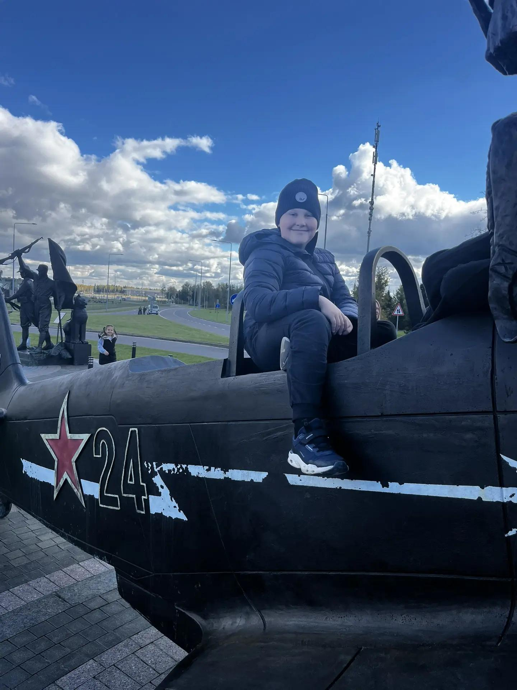
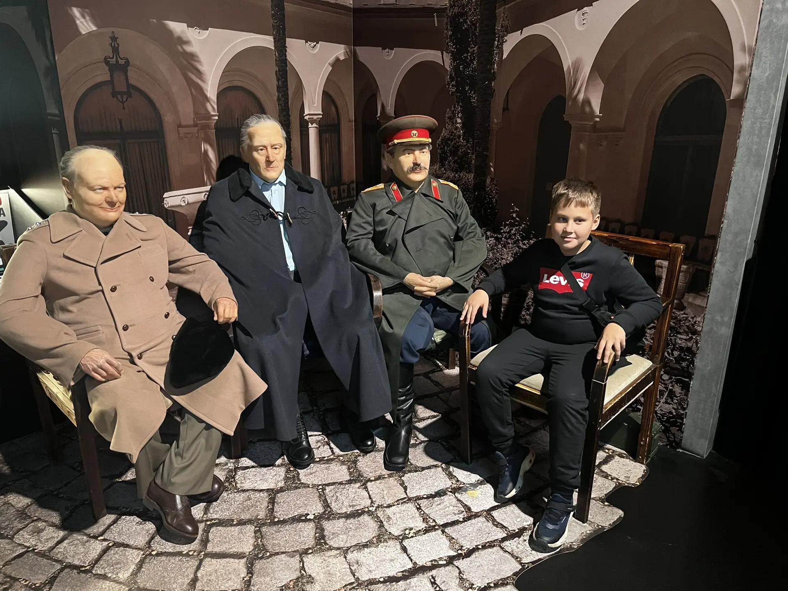
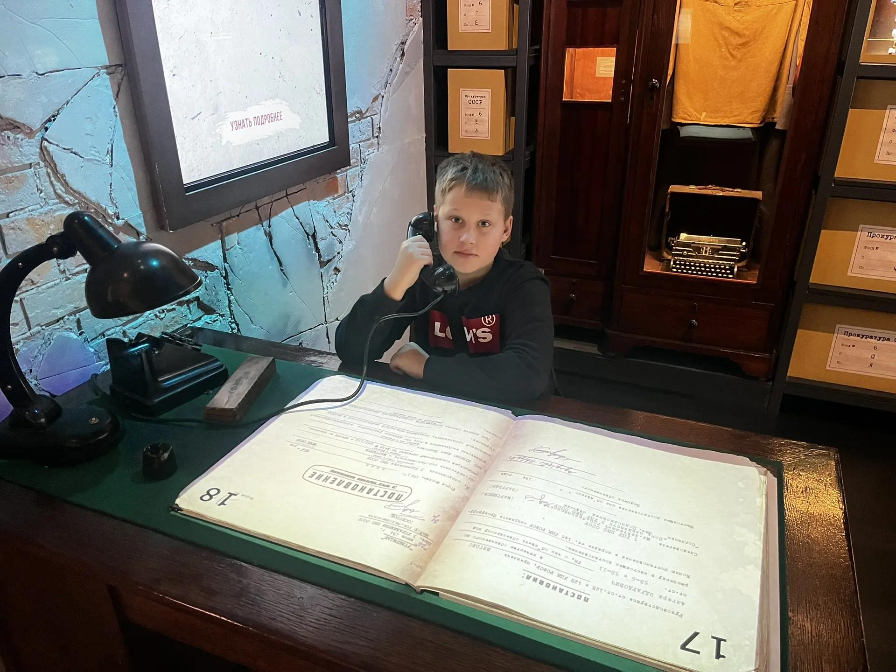
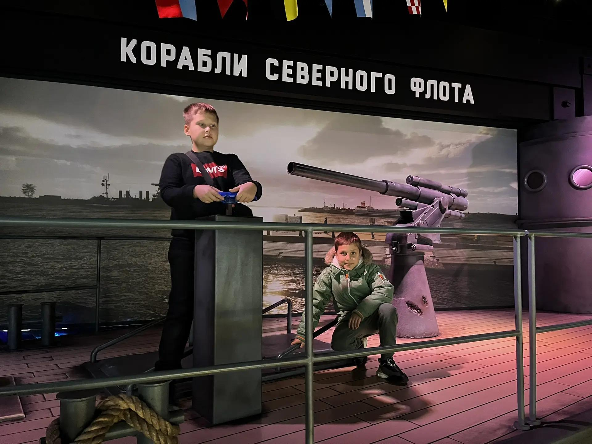
Отчёт Макара — Вылет №4 «Ночные ведьмы»
Задание принято — медаль «Ночной разведчик», золото
Радиограмма без голоса, записана штабом 5 октября 2026.
Принят полный доклад: 3 факта о Ночных ведьмах, имена пилотов и найденное фото полка. Уровень — золото. Курсант «Бессмертный» получает звание Лейтенант: у него 4 медали. Начислено 9 743 боеприпаса.
Задание от штаба — Вылет №5 «Киноархив»
Отчёт Макара — Вылет №5 «Киноархив» (часть 1)
Отчёт Макара — Вылет №5 «Киноархив» (часть 2)
Отчёт Макара — Вылет №5 «Киноархив» (часть 3)
Отзыв Макара «Как на меня повлиял фильм» (часть 4)
Ответ штаба по отчёту — Вылет №5
Хорошая работа, Макар! Здорово, что ты вспомнил детали о фильме «Лётчик».
Я немного огорчён, что ты не стал смотреть новый фильм «Повесть о настоящем человеке» и делать выводы по нему, как мы договаривались по телефону.
Для золота осталось только написать отзыв «Как на меня повлиял этот фильм» — 3–5 предложений.
Отзыв Макара — текстом в чат
1) Он похож на меня тем, что такой же упёртый, как я.
2) Он пример для всех, потому что его организм был на грани, но он добрался до своих.
3) В команде он всегда поддерживал напарника: когда того ранили, говорил ему — «Ты хороший лётчик, ты долетишь».
Задание принято — медаль «Киноархивист», золото
Радиограмма без голоса, записана штабом 9 октября 2026.
Просмотрены все три фильма: «Лётчик», «В бой идут одни старики», «Повесть о настоящем человеке». Прислан доклад и письменный отзыв. Уровень — золото. Начислено 9 869 боеприпасов.
Задание от штаба — Вылет №6 «Устройство самолёта»
Доклад по частям самолёта — двигатель АМ-38 и винт
Доклад по частям самолёта — бронированная кабина
Доклад по частям самолёта — крылья и оружие
Доклад по частям самолёта — шасси
Доклад по частям самолёта — бронированный фюзеляж
Доклад по частям самолёта — хвостовое оперение
Задание принято — медаль «Инженер», золото
Радиограмма без голоса, записана штабом 10 октября 2026.
Разобраны все шесть частей Ил-2: двигатель, кабина, крылья с оружием, шасси, фюзеляж и хвост. Каждая часть объяснена голосом и теперь озвучивается прямо на схеме самолёта. Уровень — золото. Начислено 9 888 боеприпасов.
Задание от штаба — Вылет №7 «Экипировка пилота»
Снаряжение: лётный планшет
Снаряжение: карандаши и карта
Снаряжение: пистолет ТТ
Снаряжение: шлем лётчика
Снаряжение: парашют
Задание принято — медаль «Знаток снаряжения», серебро
Радиограмма без голоса, записана штабом 11 октября 2026.
Пять предметов снаряжения принесены вместе с фотографиями и голосом: планшет, карта и карандаши, пистолет, шлем, парашют. Задание засчитано на серебро: критерий «четыре предмета с объяснением» выполнен с запасом — пять предметов, по каждому фотография и голос. До золота не хватает шестого предмета — неприкосновенного запаса: найти его, сфотографировать и рассказать голосом, зачем он лётчику. Начислено 5 187 боеприпасов. Фото предметов встали в раздел «Экипировка лётчика», голоса озвучиваются по клику на карточку.
Стихотворение «Военные лётчики» Василисы Светлой
Задание принято — медаль «Голос эскадрильи», серебро
Радиограмма без голоса, записана штабом 15 октября 2026.
Стихотворение «Военные лётчики» Василисы Светлой записано голосом, 22 секунды. Текст и автор вынесены в раздел «Голоса неба». Макар выучил стих и рассказал его наизусть, без бумажки и подсказок. Задание засчитано на серебро. До золота не хватает только песни в дуэте с дядей Глебом. Начислено 7 000 боеприпасов.
МиГ-21 — сверхзвуковой истребитель, 88 секунд
Доклад о музее в Кубинке — часть 1
Доклад о музее — часть 2, экспонаты за стеклом
Мост поколений — часть 1: эпохи
Мост поколений — часть 2: разбор параметров
Доклад «Моторист» — как работают двигатели Ил-2 и Су-57, 8 минут 29 секунд
Задание принято — медаль «Моторист», золото
Радиограмма без голоса, записана штабом 25 октября 2026.
Макар записал восемь с половиной минут видео и разобрал, как устроены оба двигателя: поршневой двенадцатицилиндровый мотор Ил-2 с поршнями, коленвалом и винтом — и реактивный мотор Су-57, где винта нет вовсе, а самолёт толкает поток газа. Он объяснил ход поршня, работу реактивной тяги, заводские испытания моторов на огне и на воде, сравнил скорости и цены с американскими и китайскими самолётами и ответил на вопросы про экологичные двигатели будущего. Задание было объяснить, как работает двигатель, — он объяснил и показал схемами. Золото. Начислено 10 000 боеприпасов.
Песня «Як Истребитель» — дуэт с дядей Глебом, 35 секунд
Медаль «Голос эскадрильи» повышена до золота
Радиограмма без голоса, записана штабом 25 октября 2026.
Песня «Як Истребитель» записана: Макар поёт два куплета, дядя Глеб играет на гитаре. Стих наизусть дал серебро, песня с дядей — золото, как и было в задании. Добавлено 3 000 боеприпасов (разница между серебром и золотом).
Отчёт по сборке конструктора: самое сложное — кабина
Задание принято — медаль «Моделист», серебро
Радиограмма без голоса, записана штабом 25 октября 2026.
Конструктор Су-57 собран, модель покрашена, и Макар записал две части рассказа о том, что оказалось сложнее всего — корпус и кабина. Собрана и покрашена — это серебро. До золота осталось одно действие: поставить модель рядом с нашим сайтом и прислать фото. Начислено 7 000 боеприпасов.
Задание № 13 — «Моделист»: собери конструктор Су-57
Радиограмма без голоса, записана штабом 25 октября 2026.
Наградной конструктор Су-57 ждёт своего инженера. Задание: собрать модель по схеме, довести её до ума и поставить в экспозицию — сфотографировать рядом с нашим сайтом. Бронза — модель собрана, серебро — ещё и покрашена, золото — плюс фото модели на фоне нашего сайта. Присылай фото и короткий рассказ голосом, что оказалось сложнее всего.
Задание принято — медаль «Мост поколений», золото
Радиограмма без голоса, записана штабом 25 октября 2026.
Макар сравнил Ил-2 и Су-57 по восьми параметрам — эпоха, класс, скорость, вес, длина, броня, экипаж и вооружение — и объяснил каждый. Пять различий с объяснением задание закрывают полностью, а сверх задания он прислал фото страницы лётной книжки, где записал это сравнение своими словами и своими цифрами. Наглядная таблица — это золото. Начислено 10 000 боеприпасов, серия вылетов: 8.
Задание принято — медаль «Музейный рейд», золото
Радиограмма без голоса, записана штабом 17 октября 2026.
Макар побывал в музее в Кубинке, где шла реконструкция обороны Москвы, и принёс фотографии МиГ-21 и три снимка из залов. Доложил про храм, построенный к 70-летию Победы, про найденную настоящую гильзу, про видео за стеклом: операция, смерч, партизаны, медики и Смерш. Задание было про голосовой доклад о походе в музей — он его выполнил полностью, поэтому золото. Письменный отчёт идёт сверху как следующая ступень, а не как условие. Начислено 10 000 боеприпасов.
ЛЁТНАЯ КНИЖКА · ЛИЧНАЯ СТРАНИЦА
Цели, которые Макар записал себе в лётную книжку от руки в начале проекта — к каждой ведёт один из пятнадцати вылетов
ЛИСТ ЗАДАНИЙ · КОНСТРУКТОР ПРОЕКТА
Лендинг растёт вместе с проектом: каждый твой материал занимает своё место. Зелёная галочка значит, что материал уже на сайте
ГЛАВНЫЙ ВЫВОД ПРОЕКТА
Слава инженерам, создавшим крылья Победы!
Слава лётчикам, поднимавшимся в небо за Родину! Их мужество и изобретательность — навсегда в нашей памяти.
Мы наследуем их славу — и продолжаем их дело.
Спасибо за внимание! Готов ответить на вопросы.
Нажимает комиссия после защиты — и на экране появляется отметка о приёмке
Исследовательский проект ученика 3 класса Макара Захаренко
«Крылья Победы. От Ил-2 до Су-57»
Работа зачтена. Макар — курсант эскадрильи «Расти семья».
ЭСКАДРИЛЬЯ «РАСТИ СЕМЬЯ»
Сайт для Макара и семьи. Введите код доступа.